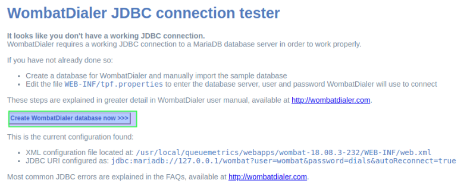
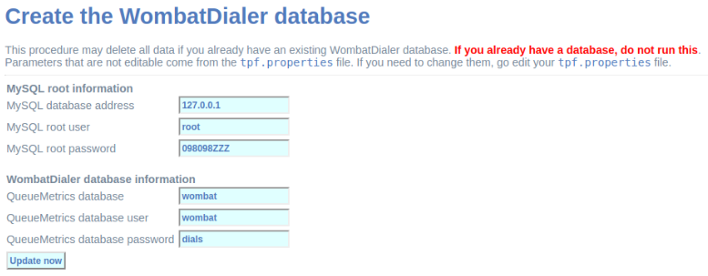
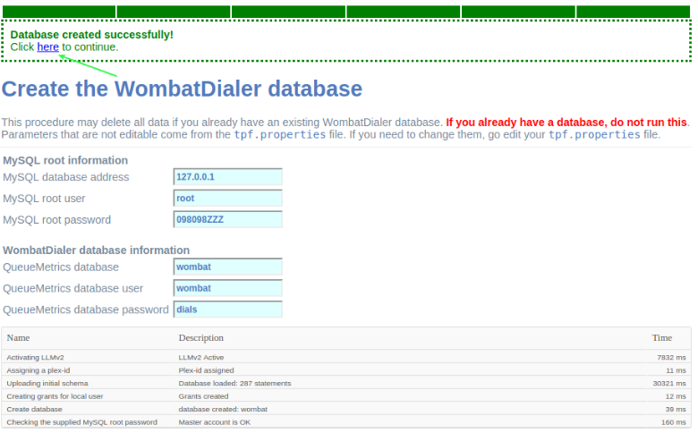
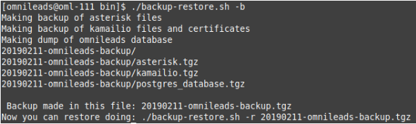
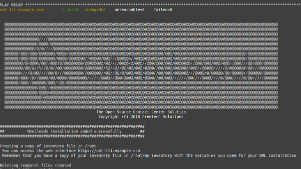
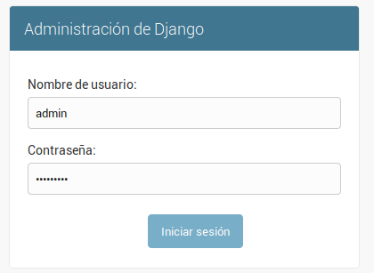
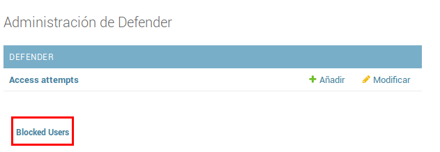
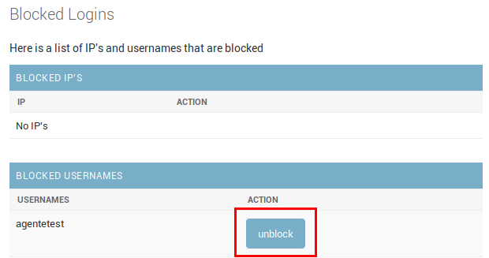

Gestiones del administrador IT¶
Configuración del módulo de Discador predictivo¶
Antes que nada se notifica que si la instancia de OML desplegada en los pasos anteriores, NO contemplan el uso de campañas con discado saliente predictivo, este paso puede ser omitido. OMniLeads necesita de una herramienta de terceros para implementar las campañas con discador predictivo. Esta herramienta se basa en licencias de software comerciales que deben ser gestionadas con el fabricante.
De todas maneras el sistema puede ser utilizado con un canal de pruebas que otorga como demo. Por lo tanto podemos configurar el componente y correr pruebas de concepto antes de adquirir licencias para una operación real.
Si se desean correr campañas predictivas, se debe generar la siguiente configuración básica de Wombat Dialer . Para generar esta configuración debemos seguir una serie de pasos que comienzan con el acceso a la URL correspondiente.
http://omnileads.yourdomain:8080/wombat ó http://XXX.XXX.XXX.OML:8080/wombat
Al ingresar por primera vez, se debe proceder con la creación de la base de datos MariaDB que utiliza Wombat Dialer. Hacer click en botón remarcado en la figura 2.
Figure 1: DB create
Luego es el momento de ingresar la clave del usuario root de MySQL y hacer click en botón remarcado en la figura 3. Nota: el password del motor MariaDB fue configurado dentro del archivo «inventory» antes de activar la instalación del sistema. (En el mismo directorio en el que clonó el repositorio de OML).


Figure 2: MariaDB root password
Procedemos entonces con la creación de la base de datos MariaDB que utilizará de ahora en más el componente Wombat Dialer.
Figure 3: MariaDB root password
Una vez creada la base de datos MariaDB que utiliza Wombat Dialer, se procede con el primer login.
Figure 4: Login post db create
A continuación se debe realizar un login en la interfaz de administración de Wombat Dialer para avanzar con la configuración de parámetros necesarios para la interacción con OML.
Al ingresar se despliega una pantalla como la siguiente, donde debemos acceder con el usuario y passwords que se generaron en la instalación. Recordar que éstas variables se encuentran en la copia del archivo inventory (my_inventory).

Figure 5: Access to WD
Una vez adentro del sistema, se procede con la configuración de dos parámetros básicos necesarios para dejar lista la integración con OMniLeads. Para ello debemos acceder al menú de «Configuración básica» como se indica en la figura 6.

Figure 6: WD basic config
En este menú se debe generar en primer lugar se debe generar una nueva instancia de conexión dentro de la sección «Asterisk Servers» como se expone en la figura 7.

Figure 7: WD basic config - AMI Asterisk
En este paso debeŕa ingresar el usuario y contraseña AMI disponible en el archivo inventory utilizado en la instalación.

Figure 9: WD basic config - AMI Asterisk user & pass
En el siguiente punto, se configura un Troncal utilizando un «Nombre del troncal» arbitrario, pero con la cadena de llamado marcada en la figura 9. Local/${num}@from-oml/n

Figure 9: WD basic config - Asterisk Trunk
Por último, recuerde dar «play» al servicio de dialer, tal como lo indica la siguiente figura 10.

Figure 10: WD activate
Finalmente la plataforma se encuentra habilitada para gestionar llamadas predictivas. La instalación por defecto cuenta con una licencia de Wombat Dialer demo de un canal.
Back & Restore¶
OMniLeads dispone de un script para llevar a cabo las tareas de backup/restore.
Para realizar un backup:
Debemos acceder por ssh al host donde tenemos corriendo OMniLeads. Una vez dentro del host se ejecutan los siguiente comandos.
su omnileads -
cd /opt/omnileads/bin
./backup-restore.sh -b
La ejecución del script arroja una salida similar a la de la figura 11.
Figure 11: backup
Como se puede observar, nos indica cómo realizar el restore de dicho backup.
Dentro del path /opt/omnileads/backup, se generan los archivos «.tgz» que contienen los backups ejecutados.
Si el restore se realiza en nuevo host, entonces se debe dejar disponible el archivo generado en el backup dentro del path /opt/omnileads/backup.
Para llevar a cabo un restore, se debe ejecutar:
su omnileads
cd /opt/omnileads/bin/
./backup-restore.sh -r nombre_del_archivo_de_backup
Por ejemplo:
su omnileads
cd /opt/omnileads/bin/
./backup-restore.sh -r 20190211_database.tgz
No hace falta agregar el path completo de ubicación del backup.
Un restore exitoso arroja una salida similar a la figura 12.

Figure 12: restore
Una vez finalizado el restore, ejecutar el siguiente comando para regenerar los archivos de configuración y valores de AstDB de la instancia que se restoreó:
/opt/omnileads/bin/manage.sh regenerar_asterisk
Actualizaciones¶
OMniLeads es forjado bajo un paradigma de releases continuos, lo cual implica un flujo de actualizaciones constantes. Por ello es muy importante llevar a cabo de manera limpia las actualizaciones.
A continuación se exponen los pasos a seguir para llevar a cabo una nueva actualización de la plataforma. Esta tarea también se realiza con el script «deploy.sh».
Las actualizaciones se anuncian por los canales de comunicaciones oficiales del proyecto. Dependiendo el método de instalación que se haya seleccionado:
Instalación Self-Hosted
Acceder como root al host omnileads Posicionarse sobre el directorio donde reside el script “deploy.sh”
cd ominicontacto/deploy/ansible
Asumiendo que estamos trabajando sobre los release estables (master) Se debe ejecutar un «git pull origin master» para traernos las actualizaciones del repositorio.
Importante
Cuando se instala el sistema, se guarda una copia del archivo de inventario en la ubicación descrita al finalizar el script, el mensaje indica:
Remember that you have a copy of your inventory file in /root/my_inventory with the variables you used for your OML installation
Utilizar este archivo de inventario para realizar la actualización del sistema. Es importante debido a que este archivo guarda las contraseñas que se usaron para la instalación.
Observar que el parámetro hostname y dirección IP tiene que coincidir respecto a lo que tenga cargado el host donde corre OMniLeads.
[omnileads-aio]
oml-dev.example.com ansible_ssh_connection=local ansible_user=root ansible_host=192.168.95.155
git pull origin master
A continuación se ejecuta el script con el parámetro -u (update). Esta ejecución tomará unos minutos e implica el aplicar todas las actualizaciones descargadas con el «git pull origin master» sobre nuestra instancia de OMniLeads.
./deploy.sh -u -a
Si todo fluye correctamente, al finalizar la ejecución de la tarea veremos una pantalla como muestra la figura 13.
Figure 14: updates OK
Instalación desde workstation Linux remoto
Se debe acceder al repositorio clonado en nuestra maquina workstation, para desde allí correr la actualización sobre el host Linux OMniLeads.
cd PATH_repo_OML
git pull origin master
cd ominicontacto/deploy/ansible
A continuación y como en cada ejecución del script «deploy.sh», se debe repasar el archivo de inventory, velando por la coincidencia del parámetro hostname y dirección IP respecto al host donde corre OMniLeads y vamos a actualizar.
[omnileads-aio]
oml-dev.example.com ansible_ssh_port=22 ansible_user=root ansible_host=10.10.1.100
Nota: se debe tener en cuenta que para instalación remota, se debe utilizar la línea con el parámetro «ansible_ssh_port=22» (donde 22 es el puerto por defecto, pero es normal tambien que se utilice otro puerto) dentro de la sección [omnileads-aio]
Se ejecuta el script con el parámetro -u (update). Esta ejecución tomará unos minutos e implica el aplicar todas las actualizaciones descargadas con el «git pull origin master» sobre nuestra instancia de OMniLeads.
./deploy.sh -u -a
Finalmente, la plataforma queda actualizada a la última versión estable «master»
Figure 15: updates from ansible remote OK
Cambios de los parámetros de red (Hostname y/o Dirección IP)¶
OMniLeads es un sistema complejo, con varios servicios orientados a las comunicaciones real-time corriendo en el Linux Host. Esto implica que un cambio de dirección IP o hostname del host conlleva cierta complejidad.
Para llevar a cabo éstas tareas, debemos ejecutar nuevamente el script «deploy.sh», el mismo que fue utilizado para llevar a cabo la instalación de la plataforma.
Debemos ingresar con el usuario root al sistema, cambiar la dirección IP a nivel sistema operativo y/o el hostname y asegurarnos de que el host tomó los cambios. Se recomienda un reboot del sistema.
Luego continuamos con los cambios sobre OML, para ellos debemos pararnos sobre el directorio donde se clonó el repositorio de OML (si fue una instalación self-hosted será dentro del host remoto, si fue una instalación desde ansible-remoto será en la máquina deployer), para luego acceder al directorio deploy/ansible, donde tenemos los archivos deploy.sh e inventory.
Allí debemos editar nuevamente el archivo inventory y repasar el hostname para que coincida con el hostname del host y allí también debemos configurar la nueva dirección IP.
[omnileads-aio]
hostname ansible_connection=local ansible_user=root ansible_host=X.X.X.X #(this line is for self-hosted installation)
Se guardan los cambios sobre el archivo y finalmente se ejecuta el script deploy.sh.
cd ominicontacto/deploy/ansible
./deploy.sh --change-network -a
Por último se ejecuta un reinicio de la plataforma. Luego podemos comenzar a utilizar OML en la nueva dirección IP.
reboot
NOTA: si está resolviendo el nombre del host de OMniLeads con su archivo hosts de su maquina de trabajo, no olvide tambien cambiar los parámetros.
Modificación de passwords de servicios¶
En caso de querer modificar las contraseñas usadas en los servicios, basta con modificar dicha contraseña dentro del archivo de inventario. Una vez seteadas ahi se procede a ejecutar el deploy.sh así:
cd ominicontacto/deploy/ansible
./deploy.sh --change-passwords -a
Desbloqueo de usuarios¶
OMniLeads cuenta con un sistema de bloqueo de usuarios, cuando alguno ingresa la contraseña erronea tres veces. Esta es una medida de seguridad implementada para evitar ataques de fuerza bruta en la consola de Login de la plataforma. El usuario administrador tiene la posibilidad de desbloquar algún usuario que haya sido bloqueado por ingresar su contraseña errónea sin querer.
Para desbloquearlo se ingresa a la siguiente URL: https://omnileads-hostname/admin, esta URL despliega la llamada Consola de Administración de Django.
Figure 16: Django admin console
Allí, ingresar las credenciales del usuario admin. Luego hacer click en el botón Defender

Figure 17: Defender in django admin
Esto abre la administración de Django Defender (https://github.com/kencochrane/django-defender) que es el plugin de Django usado para manejar esto. Hacer click en Blocked Users
Figure 18: Blocked users view
Se observará el usuario bloqueado. Basta con hacer click en Unblock para desbloquearlo.
Figure 19: Unblock user view
Ya el usuario podrá loguearse sin problema.